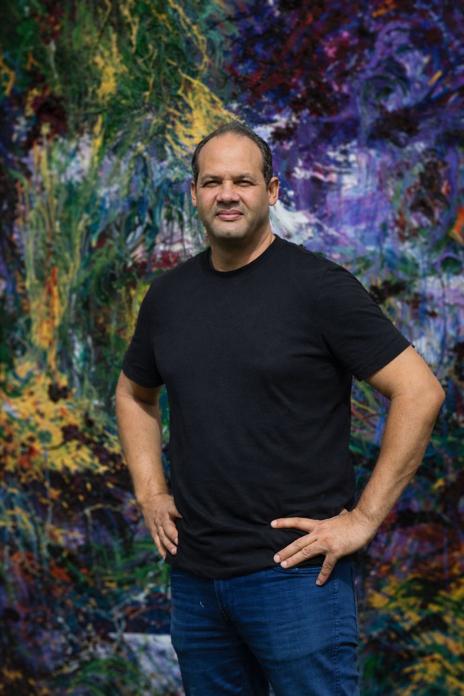
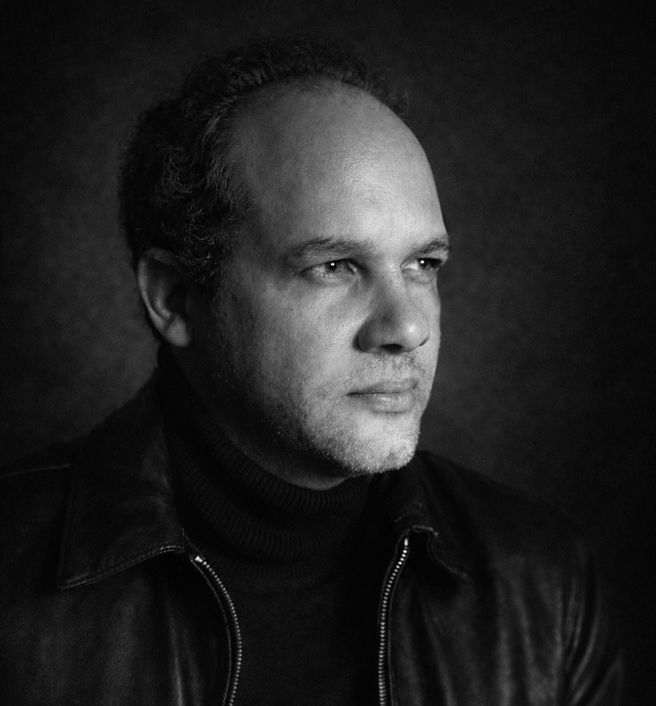

Biography

Ricardo Wagner is a Dominican multidisciplinary visual artist based in Santo Domingo.
His work spans painting, drawing, watercolor, photography and mixed media, developing a visual language rooted in abstraction and informalism.
Statement

Painting for me is an exploration of existence and the infinite.
My work investigates the origin of things, human presence in the universe, and the tension between the sacred and the earthly through abstraction.